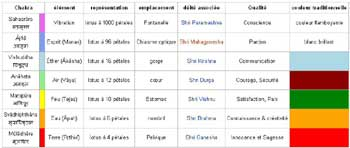
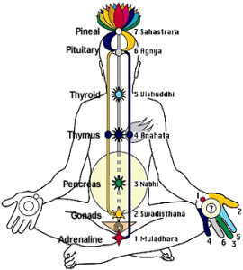
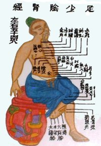
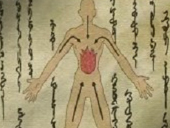

DEFINITION
:
- Un chakra
— "roue, disque en sanskrit — est le nom couramment
donné à des objets ayant la forme d'un disque, parmi lesquels
le soleil."
(Wikipedia)
- Les
7 chakra
"Ces centres d'énergie ou chakras correspondent
à nos principaux plexus nerveux dans le corps.
Ces chakras possèdent certaines qualités ... que nous
pouvons laisser à l'abandon ou que nous pouvons enrichir."
(sahajayoga.asso.fr)
LES
COULEURS
- Le
symbolisme des Couleurs.
"Le symbolisme des couleurs est issu de différentes sources
; aussi bien de l'histoire, des traditions de différents pays
et des religions etc..."
(Maryna
Maivka)
LES
CHAKRA SPIRITUELS
-
Les
chakra spirituels "décrits dans le
Kundalinî yoga, représentés par des fleurs de
lotus et marquant, sur le corps spirituel de l'homme, la progression
de l'énergie sexuelle le long des nâdi (canaux), sushumna
(canal central parasympathique), ida (canal sympathique gauche) et
pingala (canal sympathique droit), qui relient entre eux les chakra
(centres d'énergie)..."
(Wikipedia)

Cliquer sur l'image.
LES
CHAKRA : CROYANCES PHILOSOPHIQUES
- Les
chakra : croyances philosophiques issues de l'Hindouisme.
"Ceux qui examinent les chakras les décrivent comme
des organes vivants. Ils auraient pour fonction la régulation
de « l'énergie » entre les différentes parties
du corps, et entre le corps, la terre et l'univers..."
Pour Sri Swami Sivananda, "chaque chakra a en lui des pouvoirs
secrets, les Siddhis, qui sont des pouvoirs spirituels endormis..."
(Wikipedia)
LES
CHAKRA ET LE BOUDDHISME
- "Ces
modèles
védiques ont été adaptés par le bouddhisme
tibétain et le shingon japonais ou vajrayâna. Le Chakra
est aussi, dans l'iconographie bouddhiste, le halo ou auréole
qui accompagne la représentation des saints hommes, derrière
leur tête, le shirashchakra, leur corps, le prabhâvali,
composée de flammes, le jvâla..."
(Wikipedia)
LA
MEDECINE
- La
médecine taoïste
"Il y a 4 formes
de l’Energie :
le SANG qui permet l’entretien de l’existence et de la santé
du Corps,
le JING une force sexuelle des plus puissante,
le CHI ( appelé QI comme dans QI GONG ) une énergie vitale
universelle,
et le SHEN une des plus hautes énergies spirituelles..."
(tao1.hautetfort.com)

- Etude
sur les chakra avec les
7 points de pression des chakras en Shiatsu (aikidoka.fr)
Indisponible. Essayez plus tard!

SHAKRA
NARUTO
- Le Shakra
est "l'énergie nécessaire pour exécuter des
techniques ninjas.
Les techniques utilisant le shakra utilisent l'énergie de chaque
cellule du corps et l'énergie spirituelle..."
(Wikipedia)
- Le Chakra
est "l'énergie indispensable pour exécuter un Jutsu..."
(captainaruto.com)

- Ninjas
et ninjutsu dans Naruto - Chakra
- Le chakra est affilié
à 5 éléments : Le feu - L'eau - La terre - La foudre
- Le vent...
- Les huit portes ... contrôlant constamment le flux de chakra
qui circule dans le corps sont dans l'ordre suivant :
1.
la porte initiale
2. la porte de la guérison
3. la porte de la vie
4. la porte de la blessure
5. la porte de la rétention
6. la porte de la contemplation
7. la porte de l'extase
8. la porte de la mort...
(Wikipedia)
LES
CHAKRA A TRAVERS LE MONDE ET LES CULTURES
"Les
Chakra
sont de Merveilleuses Portes,
qu'il nous est possible d'ouvrir sur l'immensité du monde
de l'Energie, de la Spiritualité et de la Connaissance."
(medecines-douces.com) |
{kind=link}
{kind=link}